The Starting Point: Tokens, No Order
Your prompt becomes token IDs, each ID looks up a row in the embedding table, and you get the matrix X, one row per token. Crucially: that row is the same vector wherever the word appears. "the" at position 1 and "the" at position 5 are identical rows.
Why That's Fatal: Attention Is Order Blind
Attention compares every token with every other token via dot products, a set operation. Shuffle the input rows and the attention scores are the same numbers, just shuffled. The model literally cannot distinguish two sentences made of the same words.
Inject "where am I?" into the computation: either by adding position vectors to X (absolute), or by modifying the attention scores by distance (relative), or by rotating Q and K by position-dependent angles (RoPE). The whole history of positional encoding is variations on these three moves.
BUT WAIT A causal mask already lets token t see exactly the words before it. Isn't that order? Why can't we just generate autoregressively without any positional encoding? ▶
A natural objection, and it is half right. That is exactly why it is worth pulling apart. The causal mask does two very different things, and only one of them is about order.
✓ What the mask DOES give you. It breaks the symmetry between rows. Token 0 attends over 1 token, token 3 attends over 4 tokens. Rows are no longer interchangeable, because each row's softmax averages over a different number of values. That is a real positional signal, a weak counting signal: "how many came before me." Researchers have shown deep causal models can squeeze surprising mileage out of just this, as the footnote below explains.
✗ What the mask does NOT give you. Take "dog bites man" and look at position 3. Its query q(man) is scored against k1, k2, k3, producing the weights [α1, α2, α3]. That is an ordered list, so it is tempting to think order lives in there. It does not. Each score depends only on the content of its key token: k(dog) is the same vector whether dog sits at slot 1 or slot 2. The subscript is storage bookkeeping, not position. Swap the first two words and the same three numbers appear in swapped slots, each weight still attached to its own value vector. The output is the commutative sum Σ αj vj, so it comes out bit for bit identical. The sum is where the collapse becomes visible, but there was never a position term inside q·k to lose.
To make it concrete, keep the last word fixed and permute only the prefix:
dog bites man → ? vs bites dog man → ?
The query is q(man) in both. The visible (k, v) pairs are the same multiset. A single attention layer therefore produces the identical next word distribution for both prefixes. The mask told the model "you have 3 words behind you". It never said in what order they came.
A refinement for deep models. With two or more layers the invariance is no longer exact. The layer 1 hidden state of "bites" depends on what bites itself could see, and that differs between the two orderings, so layer 2 receives slightly different inputs. Deep causal stacks do leak some order information this way. That leak is precisely the NoPE phenomenon in the footnote below: real, but indirect and weak, which is why explicit positional encoding still wins in practice.
So: can you generate autoregressively? Mechanically, yes. Sampling runs fine and nothing crashes. But every step is conditioned on an order blind summary of the context, so "the dog that chased the cat" and "the cat that chased the dog" steer the continuation identically. For language that is fatal, because word order is meaning.
The honest footnote (NoPE). The objection isn't wrong as research. Haviv et al. 2022 showed causal transformers with no positional encoding still learn usable position information, because the counting signal propagates through layers: the variance and magnitude of attention outputs depend on how many tokens were averaged. Kazemnejad et al. 2023 showed "NoPE" can even beat explicit encodings on some length generalization benchmarks. But the signal is indirect, weak at telling nearby orderings apart (exactly what syntax needs), and only exists in causal models. Bidirectional encoders get nothing. So in practice every production LLM still injects position explicitly. The mask alone is a counting trick, not an ordering.
2017, Sinusoidal: A Wave Fingerprint Per Position
The original Transformer's answer: build a deterministic vector for each position out of sines and cosines at geometrically spaced frequencies, and simply add it to the token embedding. Early dimensions oscillate fast (they distinguish neighbors), late dimensions oscillate slowly (they encode coarse location).
A raw integer grows unboundedly and a single scalar is hard for dot products to use. Sinusoids are bounded in [−1,1], every position's vector has similar norm, and, the elegant part, the encoding of pos+k is a fixed linear transform (a rotation) of the encoding of pos, so relative offsets are easy for the network to express. That rotation idea returns with a vengeance in RoPE.
2018, Learned Absolute: Just Train a Table
BERT and GPT-2 dropped the formula: make a second embedding table, indexed by position instead of token ID, and let gradient descent figure out what each position should mean. Row 0 = "I am first", row 1 = "I am second", … added to X exactly like sinusoids.
2018 to 2019, Relative: Distance, Not Address
A shift in philosophy (Shaw et al., Transformer-XL, T5): what matters for language isn't a token's absolute address. It's how far apart two tokens are. "Adjective right before noun" is the same pattern at position 5 or position 5000. So instead of touching X, inject position into the attention scores: a learned bias b(i−j) added to every Q·K logit.
2021, RoPE: Rotate, Don't Add
RoPE (Rotary Position Embedding) is what nearly every modern LLM uses: LLaMA, Mistral, Qwen, DeepSeek, Gemma. Let's build it like a lesson, on our fixed prompt:
The(0) cat(1) sat(2) on(3) the(4) mat(5)
First, the why: what is everyone before RoPE getting wrong?
Before learning the mechanism, earn the motivation. By 2021 we had two families on the table, and both have a structural flaw.
Flaw 1. Adding position corrupts content. Sinusoidal and learned encodings both do x + p: they push the position vector into the same space as the meaning vector. Look at what that does to our prompt. The word "the" appears at position 0 and position 4. After addition, x_the + p₀ and x_the + p₄ are two different vectors: different directions and even different lengths. The same word is no longer the same input. And inside attention the damage multiplies out. When "sat" scores against "cat", the dot product expands into four terms:
Flaw 2. Absolute encodings answer the wrong question. Language patterns are relative. "Adjective right before noun" is the same pattern at position 5 or position 5000. But with absolute encodings, "cat" at position 1 and "cat" at position 100 are different inputs, so the model must relearn every pattern at every address it might occur. The learned table adds a hard wall on top (§4): past max_len there is simply no row.
Flaw 3. The relative fix (§5) is bolted on, not built in. T5's bias gets the philosophy right, but the implementation is a scalar patch: the same bias for "the…cat" as for "ate…pizza" at equal distance, content blind. It needs learned bucket tables per head per layer. And it injects an extra lookup into the middle of the attention kernel, which is exactly the hot loop FlashAttention works so hard to keep pure.
So here is the wish list a better method must satisfy: relative by construction (the score should depend on the gap, automatically), zero parameters, content left intact (no smearing position into meaning), and living inside q·k itself so standard attention, KV caching, and fused kernels work unchanged.
And §3 already whispered the answer. Remember the elegant property of sinusoids: the encoding of pos+k is a rotation of the encoding of pos. RoPE takes that hint literally. Stop adding the wave fingerprint to the content. Instead, rotate q and k themselves by a position dependent angle, and let the dot product, which naturally measures angles, do the rest. Now the lesson.
Step 1: Pick one token and split its vector into pairs
We follow "sat", position m = 2. To keep numbers small, our toy model has d = 4, so its query vector has 4 numbers, which RoPE treats as 2 pairs. Each pair is a point on a 2D plane. Each pair owns a rotation speed:
The rule is one sentence: rotate each pair by (position × that pair's speed). "sat" is at position 2, so pair 0 rotates by 2 × 1.0 = 2.0 rad (≈115°) and pair 1 rotates by 2 × 0.01 = 0.02 rad (≈1°).
Where do these numbers actually come from? Three tiny computations. First the speeds, straight from the formula with d = 4:
Second the angles, which are simply position times speed. "sat" sits at m = 2:
Third the new coordinates, by multiplying each pair with its 2×2 rotation matrix. For pair A, plug in cos(2.0) = −0.416 and sin(2.0) = 0.909:
Here is all of that drawn:
Step 2: Every position reads differently on every dial
Do this for all six tokens of the prompt. On the fast dial, each step of position adds a big angle: "The"(0), "cat"(1), "sat"(2)… land at clearly different directions. On the slow dial they huddle together. It only distinguishes coarse regions of a long document. A token's position is the combination of all dial readings, exactly like the sinusoidal clocks of §3, but rotating Q and K instead of adding to X.
Step 3, the payoff: attention only sees the gap
Now the reason rotation beats addition. Attention computes q·k. Put the teacher example to work: let "sat" (position 2) attend to "cat" (position 1). q was rotated by 2θ, k by 1θ. The dot product of two rotated vectors depends only on the angle between them, and that is (2−1)θ = 1θ. The absolute positions cancel:
Zero parameters. Relative by construction. Applied only to Q and K (V stays clean). Works with KV-caching and FlashAttention. Score influence decays naturally with distance. And it has a tunable knob, the base 10000, which turned out to be the key to long context (§8). One real weakness: run far past the trained length and the fast dials enter angles the model never saw, which is also §8's problem to fix.
2022, ALiBi: No Embedding At All
ALiBi (Press et al., "Train Short, Test Long") is the minimalist rebellion: delete positional embeddings entirely. Just subtract a penalty proportional to distance from every attention score. The further away a token is, the harder it is to attend to. Each head gets a different slope, so some heads stay local and others see far.
2023+, Stretching RoPE to 128k and Beyond
The modern problem: you trained with RoPE at 4k context. Users want 128k. Run longer sequences naively and the fast dials spin into angle territory the model has never seen, and attention falls apart. Three generations of fixes, all answering: how do we reuse the trained angle range?
PI (Meta 2023): uniform squeeze, needs brief fine tuning. NTK-aware (2023): raise the base θ instead of squeezing; zero shot friendly. YaRN (2023): NTK by parts plus attention temperature; used by Qwen2 and DeepSeek for 128k. LongRoPE (Microsoft 2024): searches a non uniform per dimension rescale, demonstrated 2M token context. And the blunt but effective option: just train with a huge base. LLaMA-3 ships RoPE with θ = 500,000 so the dials are slow enough out of the box.
The Full Picture
| Method | Year | Where it acts | Params | Length generalization | Used by |
|---|---|---|---|---|---|
| Sinusoidal | 2017 | added to X | none | poor in practice | original Transformer |
| Learned absolute | 2018 | added to X | max_len × d | hard cliff at max_len | BERT, GPT-2/3 |
| Relative bias (T5) | 2019 | added to scores | buckets × heads | good | T5, (concept → many) |
| RoPE | 2021 | rotates Q, K | none | good near trained len | LLaMA, Mistral, Qwen, DeepSeek, Gemma |
| ALiBi | 2022 | ramp on scores | none | excellent | BLOOM, MPT |
| PI / NTK / YaRN / LongRoPE | 2023 to 2024 | rescales RoPE | none | extends RoPE to 128k and beyond | Qwen2, DeepSeek, LLaMA-3-long, Phi |
1) Attention is a set operation, so position must be injected or order doesn't exist. 2) The field converged on relative information, and RoPE delivers it elegantly by rotating Q,K so absolute position cancels in the dot product. 3) Long context is mostly frequency surgery on RoPE: squeeze positions or retune the dials so new lengths reuse trained angles.